에이전트 11개, 병목은 나였어요
발표자는 메타에서 일하면서 에이전트를 여러 개 동시에 돌려요. 어느 날 퇴근 전에 세어 보니 돌아가는 에이전트가 정확히 11개였어요. 아래 그림처럼 한 프로젝트에 5개, 다른 프로젝트에 2개, 나머지 4개는 하고 싶었던 사이드 프로젝트에 붙어 있었어요.
문제는 어느 에이전트가 나를 기다리는지 한눈에 알 수 없다는 점이었어요. 탭을 옮겨 가며 하나씩 봐야 했고, 승인을 기다리며 막힌 에이전트는 20분, 30분씩 그대로 서 있었어요. 정작 본인은 그 사실을 몰랐고요.
에이전트를 많이 돌릴수록 병목은 결국 저라는게 더 뼈저하게 느껴지더라고요.
— 영상 00:34
그래서 소개하는 도구가 herdr예요. 영상은 세 부분으로 가요. 먼저 herdr가 무엇이고 왜 필요한지 tmux를 모르는 사람도 따라올 수 있게 설명하고, 다음으로 설치와 핵심 기능을 훑어요. 마지막에는 발표자가 만드는 서비스 AutoKliq를 에이전트 여러 개로 실제 개발해요.
터미널 멀티플렉서는 무엇을 하나요
터미널 멀티플렉서가 하는 일은 세 가지예요. 아래 화면 위쪽 카드 세 장이 그 순서예요. 쪼갠다(터미널 하나를 여러 페인으로), 묶는다(페인을 탭으로, 탭을 세션으로), 살린다(터미널을 닫아도 세션이 계속 돌아감). 앞의 둘은 요즘 터미널 앱도 다 해요. 그래서 세 번째 카드에만 '핵심 — 이것만 멀티플렉서가 함'이라는 표시가 붙어 있어요.
아래쪽 비교 그림은 '터미널 창 닫기' 버튼을 누른 뒤의 모습이에요. 왼쪽 일반 터미널에서는 iTerm·Ghostty 같은 앱이 프로세스를 직접 쥐고 있어서, 창이 닫히자 claude · npm run dev 칸이 빨갛게 '종료됨'으로 바뀌었어요. 오른쪽은 앱과 프로세스 사이에 tmux/herdr 서버가 끼어 있어서, 창은 흐려졌지만 프로세스 칸은 '계속 실행 중'이에요.
발표자는 이걸 모니터와 컴퓨터에 비유해요. 터미널 창은 모니터, 멀티플렉서 서버는 그 뒤의 컴퓨터예요. 모니터를 꺼도 틀어 둔 유튜브 영상은 계속 재생되고, 다시 켜면 이어서 볼 수 있죠. 프로세스는 모니터가 아니라 컴퓨터 안, 즉 서버에서 돌고 있어요.
아래 화면 맨 아래 '2007' 카드가 tmux 이야기예요. 지금 가장 많이 쓰는 멀티플렉서 tmux는 2007년에 나왔어요. 원래는 서버 관리자가 SSH(Secure Shell)로 원격 서버에 붙어 일하다가 연결이 끊겨도 작업이 날아가지 않게 쓰던 도구예요.
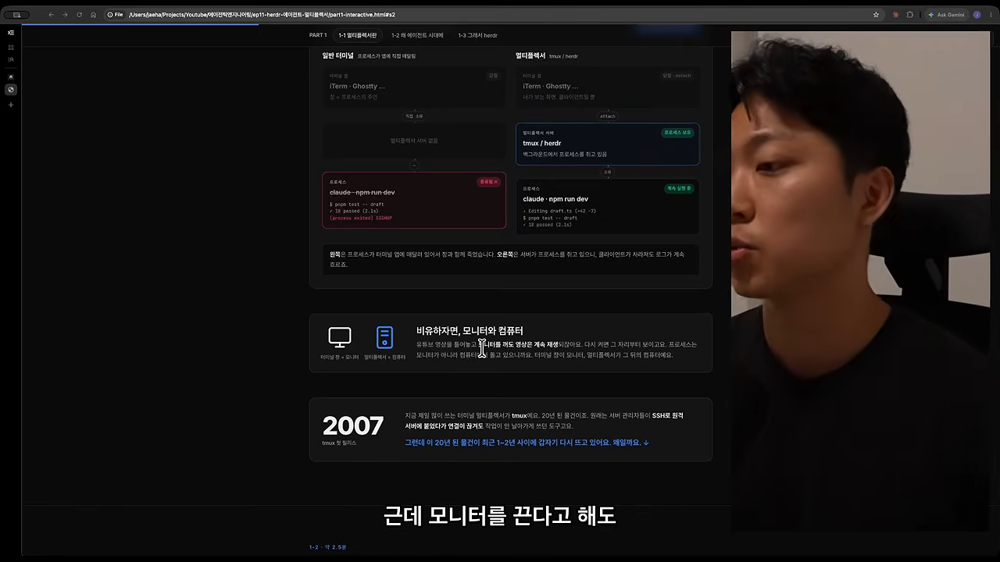
에이전트 시대에 tmux가 다시 뜬 이유와 한계
내가 안 볼 때도 도는 프로세스
예전에는 개발자 한 명이 굴리는 프로세스가 내가 타이핑하는 시간과 거의 똑같았어요. 에디터를 쓰는 동안만 뭔가가 돌았죠. 탭이 많이 필요 없었고, 발표자도 팀원들도 tmux를 거의 안 썼어요. tmux는 서버 관리자의 도구였어요.
아래 화면의 타임라인이 에이전트 시대의 10분이에요. 맨 윗줄 '나 (지시)'에는 흰 점 세 개만 찍혀 있어요. 지시를 내린 순간들이에요. 그 아래 claude #1, claude #2, codex 리뷰는 파란 막대로 길게 이어져요. 지시 한 번에 10분, 20분, 30분씩 혼자 도는 거예요. 화면 문구대로 프로세스의 성격이 '내가 지켜보지 않는 동안 오래 도는 것'으로 바뀌었어요.
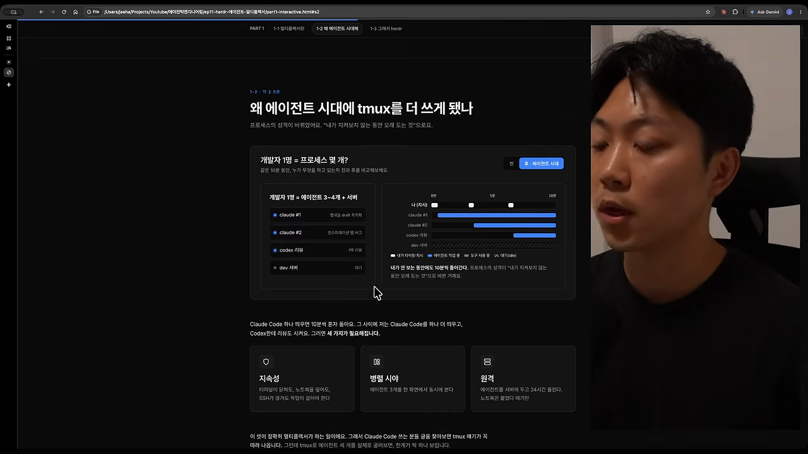
그래서 화면 아래 카드 세 장이 말하는 세 가지가 필요해졌어요.
- 지속성 — 터미널이 닫혀도, 노트북을 덮어도, SSH가 끊겨도 작업이 살아 있어야 해요.
- 병렬 시야 — 에이전트 여러 개를 한 화면에서 관리할 수 있어야 해요. 다 동시에 읽을 수는 없어도 관리는 돼야 해요.
- 원격 — 에이전트를 서버에 두고 24시간 돌려요. 발표자는 회사에서 서버를 여러 대 받아, 서버마다 에이전트를 네다섯 개씩 돌린대요. 로컬에서는 거의 안 돌려요.
이 셋이 정확히 멀티플렉서가 하는 일이에요. 그래서 Claude Code나 Codex 쓰는 사람들의 글을 찾아보면 tmux 얘기가 꼭 따라 나와요.
tmux가 보는 세상
그런데 tmux로 에이전트를 여럿 굴려 보면 한계가 하나 보여요. 발표자는 퀴즈를 하나 내요. 아래 화면의 페인 세 개 중 승인을 기다리는 건 어느 것일까요? 정답은 가운데 pane 2예요. 마지막 줄에 노란 글씨로 Allow this edit? (y/n)이 떠 있거든요. 화면 설명대로, 맞혔든 틀렸든 우리는 텍스트를 전부 읽어서 알아냈어요.
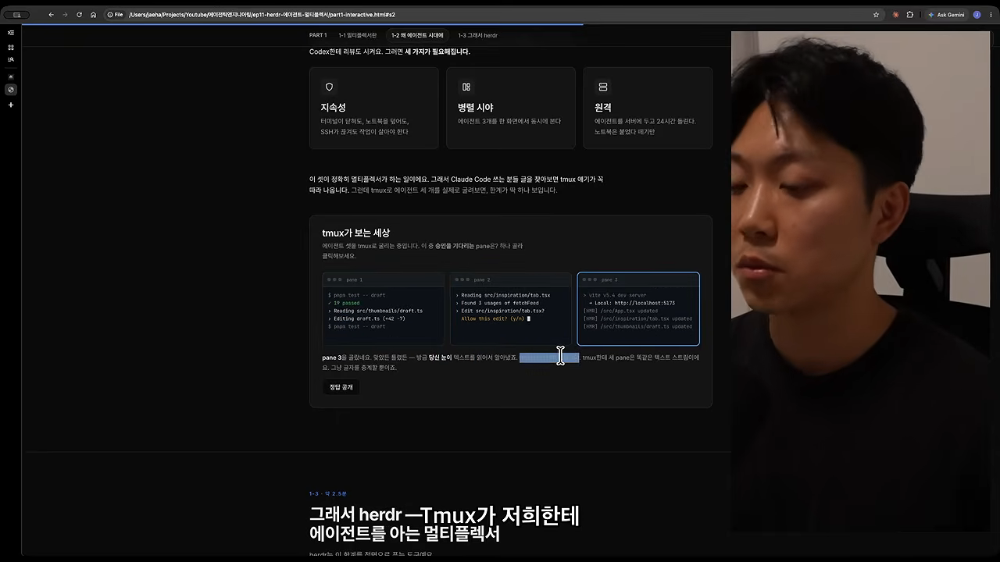
tmux는 에이전트가 승인을 기다리는지, 끝났는지, 에러로 멈췄는지 구분해 주지 못해요. 글자를 보여 줄 뿐이에요. 결국 탭을 돌며 확인하는 병목이 다시 생겨요. 멀티플렉서는 있는데 병목은 여전히 나인 상태예요. 여기서 에이전트를 아는 멀티플렉서라는 개념이 나와요.
herdr: 에이전트 상태를 아는 tmux
아래 화면 위쪽에 herdr의 공식 표현이 적혀 있어요. "the runtime your coding agents live on", 코딩 에이전트가 사는 런타임이라는 뜻이에요. 발표자는 이걸 자기 식으로 '에이전트 상태를 아는 tmux'라고 옮겨요. 가운데 'tmux와 같은 것' 줄에는 체크 표시 세 개가 있어요. 서버-클라이언트 구조, detach/attach, 그리고 프리픽스 키 ctrl+b예요.
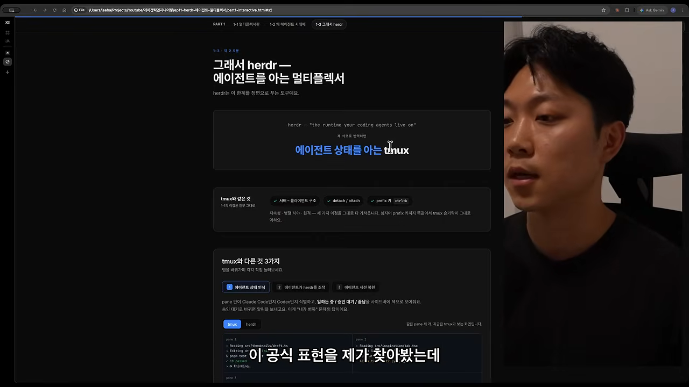
다른 점: 사이드바가 상태를 알려 줘요
화면 아래 'tmux와 다른 것 3가지' 탭은 에이전트 상태 인식, 에이전트가 herdr를 조작, 에이전트 세션 복원이에요. 발표자가 짚는 건 첫 번째예요. 같은 페인 세 개를 herdr로 보면 아래처럼 왼쪽에 사이드바가 생겨요. claude는 working, 다른 claude는 blocked, codex는 done, zsh는 dev라고 적혀 있어요. 오른쪽 위에는 'claude (pane 2) needs your approval' 알림이 떠 있고, 맨 아래 줄은 1 blocked · 1 working · 1 done으로 요약해요.
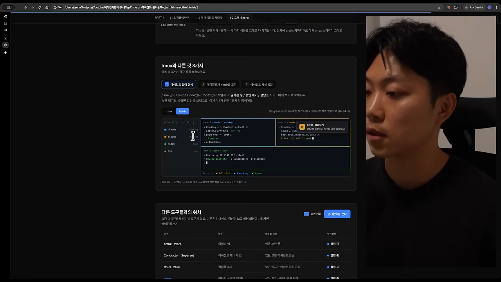
에이전트가 아닌 일반 터미널을 돌리는 페인도 따로 보여서, 워크스페이스 전체를 한눈에 관리할 수 있어요. 어느 에이전트가 지금 내 주의를 필요로 하는지 바로 알고, 막힌 걸 곧장 풀어 줄 수 있죠. 발표자는 이걸로 자기라는 병목을 상당 부분 줄였다고 해요.
다른 도구들과의 위치
요즘 에이전트용 터미널 도구가 많아서 발표자도 처음엔 tmux와 cmux가 뭐가 다른지 헷갈렸대요. 아래 화면 표는 기준을 하나로 정리해요. '보던 화면이 사라지면 에이전트는 어떻게 되나'예요. 표 아래 인용은 herdr 공식 비교 페이지의 문장이에요.
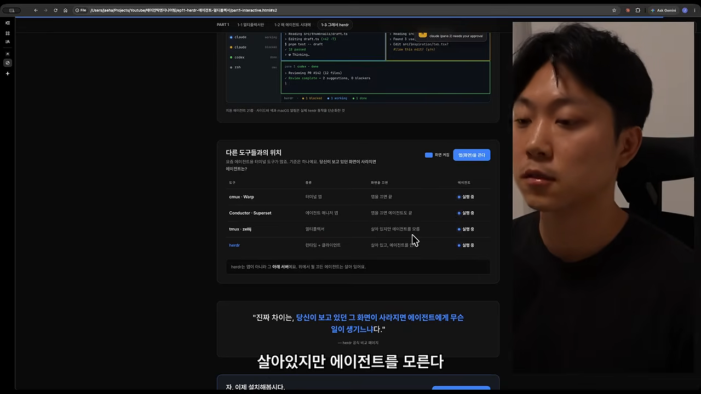
| 도구 | 종류 | 화면을 끄면 |
|---|---|---|
| cmux · Warp | 터미널 앱 | 앱을 끄면 프로세스도 끝나요 |
| Conductor · Superset | 에이전트 매니저 앱 | 앱을 끄면 에이전트도 끝나요 |
| tmux · zellij | 멀티플렉서 | 살아 있지만 에이전트를 몰라요 |
| herdr | 런타임 + 클라이언트 | 살아 있고, 에이전트를 알아요 |
발표자는 Conductor와 Superset은 써 보지 않았다고 밝혀요. 영상 초반에는 herdr가 올여름 GitHub 트렌딩 1위를 했고, GitHub 스타가 3만 4천 개, 8월에는 YC(Y Combinator) 투자까지 받았다고 소개해요.
설치하고 첫 화면 보기
설치와 에이전트 스킬
브라우저에 herdr를 검색해 맨 위에 나오는 herdr.dev로 가면 설치 페이지가 있어요. 아래 화면처럼 macOS·Linux는 curl 한 줄, Windows는 PowerShell 명령, 그 아래 Homebrew(brew install herdr)와 mise 설치법이 나와요. 발표자는 이 명령을 그냥 Claude에게 붙여 넣어 설치를 맡겼어요.
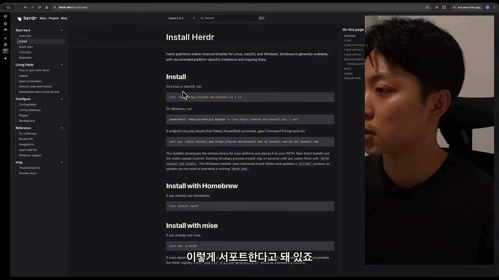
발표자가 재미있다고 꼽는 건 같은 사이트의 Agent skill file이에요. 에이전트가 herdr를 잘 다루도록 만든 에이전트 스킬이에요. 아래 화면 'What the skill does'에 스킬을 깐 에이전트가 할 수 있는 일이 적혀 있어요. 워크스페이스·탭·페인과 이웃 에이전트 살펴보기, 포커스를 뺏지 않고 페인을 나눠 명령 실행하기, 페인 출력 읽기, 서버·테스트·다른 에이전트가 끝나길 기다리기, 옆 페인에 도우미 에이전트 띄우기예요.
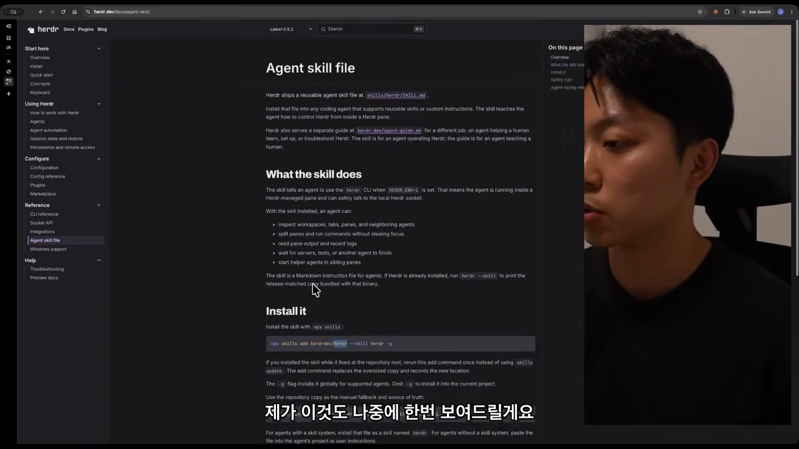
npx skills add 한 줄이에요. herdr가 이미 깔려 있다면 herdr --skill로 그 버전에 맞는 스킬 파일을 출력할 수도 있어요.
영상 13:16에서 보기
이 스킬을 Claude에게 설치해 두면 Claude가 페인을 직접 만들고 다른 에이전트를 부리기 시작해요. 이 장면은 3부에서 실제로 나와요.
세션, 스페이스, 탭, 페인
Ghostty에서 새 창을 열고 herdr만 치면 하던 작업이 그대로 다시 떠요. 터미널을 껐다 와도 herdr 서버에서 계속 돌고 있었기 때문이에요. 앞에서 말한 지속성이 바로 이거예요.
처음 쓰는 사람은 herdr만 치면 기본 세션에 붙어요. 이름을 붙인 세션(herdr session attach work)을 만들면 일과 사이드 프로젝트처럼 완전히 다른 영역을 나눠 관리할 수 있어요. 발표자는 귀찮아서 기본 세션 하나에 다 둔대요. 세션이라는 개념이 있다는 것만 알면 돼요. 한 세션 안의 구조는 아래 그림과 같아요.
herdr 화면은 왼쪽 위 스페이스 목록, 왼쪽 아래 에이전트 목록, 오른쪽 메인 페인으로 나뉘어요. tmux는 마우스를 기본 지원하지 않아서 단축키를 먼저 외워야 하지만, herdr는 마우스가 기본이에요. new를 눌러 스페이스를 만들고, 이름을 바꾸고, 탭을 추가하는 걸 다 클릭으로 해요.
아래 화면은 Autoliq 스페이스를 만들고 Claude Code를 실행한 직후예요. 왼쪽 아래 agents 목록에 Autoliq 항목이 새로 생긴 게 보여요. 에이전트를 실행하면 herdr가 알아서 목록에 올려요. 발표자가 스페이스 이름을 치다 오타를 내서 AutoKliq가 아니라 Autoliq로 적혔어요.
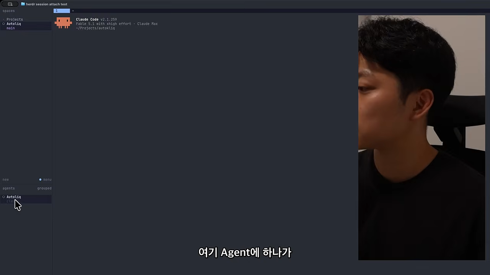
사이드바 색으로 상태 읽기
색 네 가지
발표자는 review 탭을 하나 더 만들어 PR 8번 리뷰를 맡겨요. 에이전트가 돌기 시작하면 사이드바의 동그라미가 색으로 상태를 알려 줘요.
| 사이드바 표시 | 뜻 |
|---|---|
| 노란색 | 일하는 중이에요 (working) |
| 빨간색 | 내 승인을 기다려요 (blocked) |
| 꽉 찬 초록색 | 끝났는데 아직 안 읽었어요 (done) |
| 속이 빈 초록색 | 끝났고 읽었어요. 아무것도 안 하는 상태예요 |
이어서 페인을 오른쪽과 아래로 나눠 네 칸을 만들고, Claude 옆에 Codex를 띄워요. 아래 화면에서 왼쪽 위는 "hi"에 답한 Claude, 오른쪽 위는 막 실행한 Codex예요. 왼쪽 아래 agents 목록을 보면 Autoliq 항목마다 claude, codex가 따로 적혀 있어요. 보이지 않는 탭까지 합쳐 에이전트 여섯 개가 돌고 있고, 그중 셋이 Claude, 나머지가 Codex예요.
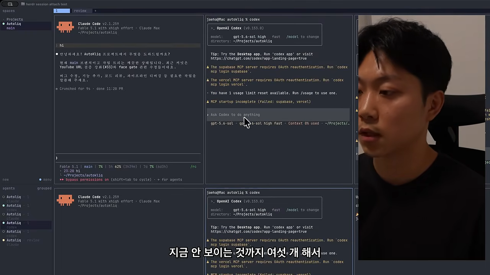
스페이스도 상태를 물려받아요. Autoliq 안의 에이전트 하나가 노란색이면 Autoliq 스페이스 자체가 노란색으로 보여요. 이 스페이스는 아직 일하는 중인지, 다 끝나고 쉬는 중인지 프로젝트 단위로 바로 알 수 있어요.
단축키와 설정
단축키는 외우면 훨씬 빨라지지만, 마우스로 다 되니 필요할 때 조금씩 익히면 돼요. ctrl+b를 누르면 화면 아래에 prefix가 뜨면서 명령을 받을 수 있는 상태가 돼요. 여기서 ?를 누르면 아래 키 목록이 열려요.
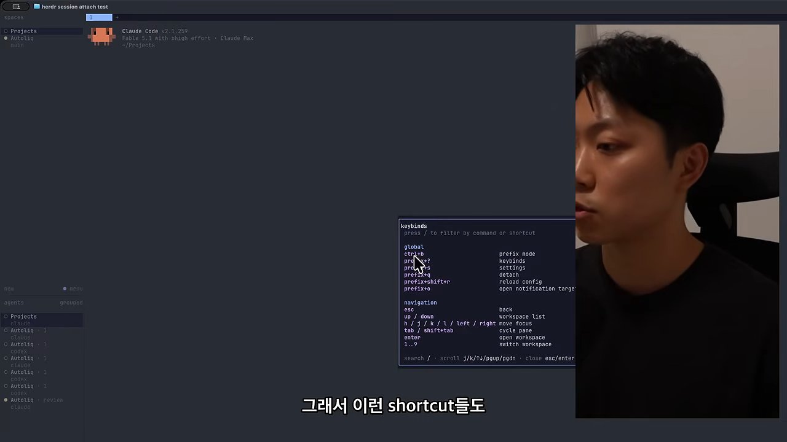
| 키 | 하는 일 |
|---|---|
ctrl+b | 프리픽스 모드로 들어가요 |
prefix+? | 키 목록을 열어요 |
prefix+s | 설정을 열어요 |
prefix+q | detach해요 |
prefix+shift+r | 설정을 다시 불러와요 |
prefix+o | 알림이 가리키는 곳으로 가요 |
s로 연 설정에는 테마, 소리, 토스트 알림, 페인 라벨, 통합 탭이 있어요. 에이전트가 끝나면 알림이 오니 소리는 켜 두라고 권해요. 아래는 integrations 탭이에요. 발표자 컴퓨터에서는 claude와 codex만 available이고, pi, copilot, cursor, grok 같은 나머지는 not found예요. 쓰는 에이전트가 있으면 여기서 install로 통합하면 돼요.
터미널을 꺼도
마지막으로 터미널을 종료한 뒤 기본 세션에서 다시 아까 세션으로 들어가요. 아래 화면처럼 review 탭의 Claude가 "PR #8 리뷰가 백그라운드에서 진행 중"이라는 상태 그대로, 여전히 코드 리뷰를 하고 있어요.
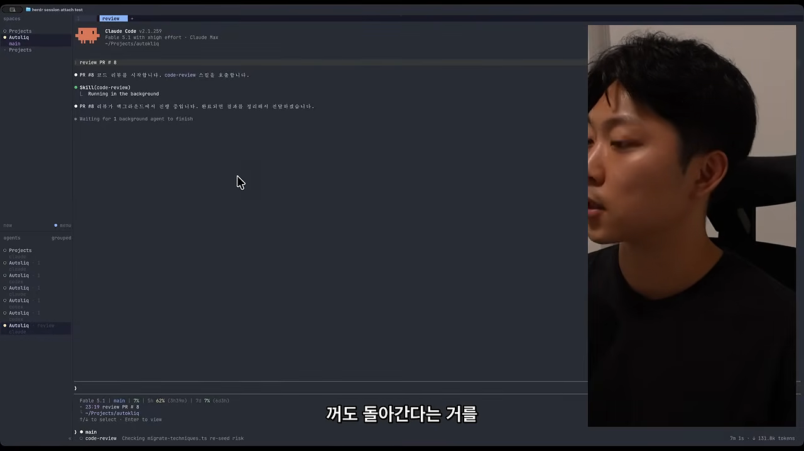
오케스트레이터에게 작업 세 개 맡기기
오늘의 작업 세 개
3부에서는 발표자가 함께 만들고 있는 썸네일 생성 서비스 AutoKliq를 실제로 개발해요. 최근에 생성 흐름을 바꿨어요. 아래 화면처럼 썸네일을 바로 만들지 않고 'Concept proposals'로 시안 두 개를 먼저 보여 줘요. 시안마다 방향, 구도, 색, 문구가 적혀 있어요. 마음에 드는 시안을 골라 Generate를 눌러야 그때 크레딧이 빠져요. 화면 아래 줄에 시안 하나에 30 크레딧이라고 나와요.
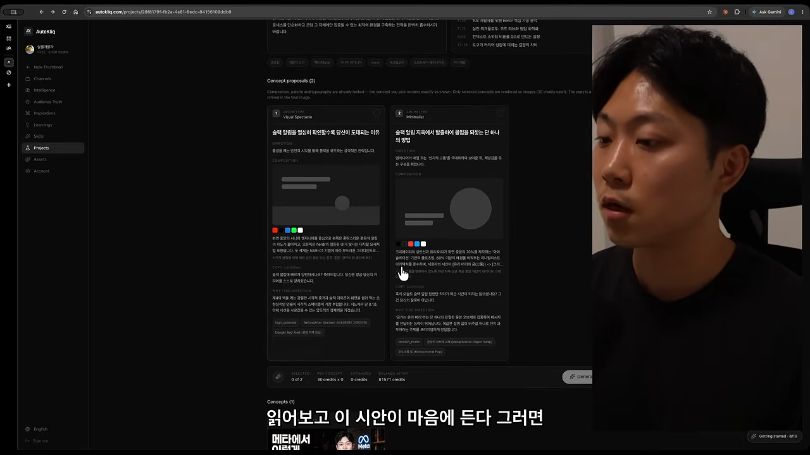
왜 바꿨는지도 설명해요. 예를 들어 300 크레딧을 가진 사용자가 원하는 썸네일이 안 나오는데 크레딧만 다 써 버리면 기분이 상하죠. 시안을 먼저 읽고 고르게 하면 사용자가 결과를 더 쥐고 있다고 느껴요. 다만 지금 시안 단계에 버그가 좀 있고 느려서 손보고 싶어요. 오늘 할 일은 이렇게 세 가지고, 영역이 달라서 서로 겹치지 않아요.
- 시안(draft) 생성 단계 최적화 — 프로파일링으로 가장 느린 구간을 찾고, 품질은 지키면서 시간을 줄여요.
- Inspirations 탭 버그 수정 — 탭이 로딩되지 않아요.
- 시안 섹션 UX(User Experience) 브레인스토밍 — 더 쓰기 편하게 만들 아이디어를 모아요.
아래 화면이 Claude Code에 그대로 말로 넣은 지시예요. 마지막 줄이 핵심이에요. "그렇게 세 가지를 이 pane 각 pane별로 띄어서 나한테 보고해."
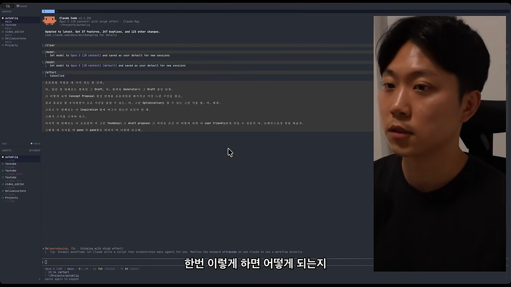
Claude가 페인을 만들고 일을 나눠요
Claude는 herdr 스킬을 불러와 일을 시작해요. 아래 화면 왼쪽 위가 Claude 자신의 페인이에요. 먼저 "Herdr 세션 안이 맞다"고 확인하고, 처음에 백그라운드로 띄웠던 에이전트 세 개를 중복과 파일 충돌을 막으려고 멈춘 뒤 보이는 페인으로 다시 띄워요. 2×2 그리드를 만들어 좌상단은 자기 자리로 두고, 나머지 세 칸에 이름을 붙였어요. 1-profiling, 2-inspirations-bug, 3-ux-brainstorm이에요.
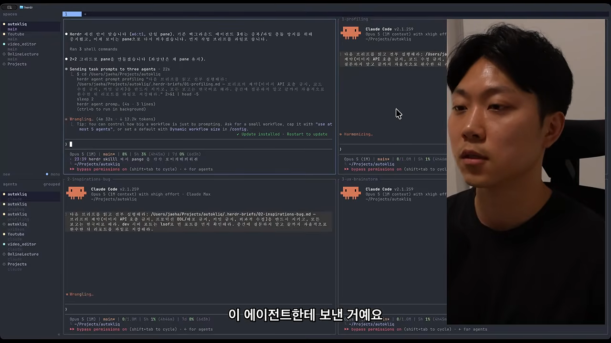
구조를 그림으로 보면 이래요. 오케스트레이터가 작업마다 브리프를 .herdr-briefs/ 아래 파일로 써 두고, herdr agent prompt 명령으로 각 페인에 "이 파일을 읽고 실행해라"만 보내요. 긴 지시문을 통째로 넘기지 않고 파일로 핸드오프하는 거예요.
눈여겨볼 점이 하나 있어요. 발표자는 권한 확인을 건너뛰라고 시킨 적이 없는데, 오케스트레이터가 작업자를 bypass permissions 모드(--permission-mode bypassPermissions)로 띄웠어요. 승인 질문 때문에 작업이 멈추지 않게 한 거예요. 대신 브리프마다 이미지 API 호출 금지, 코드 수정 금지(프로파일링), 프로덕션 배포·DDL(Data Definition Language) 금지, 커밋 금지 같은 제약을 적어 뒀어요. 발표자는 이걸 보고 진짜 오케스트레이션이라고 말해요.
사람은 검증하는 자리로
왜 굳이 페인으로 보나요
사실 에이전트는 백그라운드 프로세스로 돌려도 돼요. 그런데도 페인에 띄우는 이유는 사람이 중간에 끼어들 수 있어서예요. 작업이 엉뚱하게 가고 있거나, 버그 수정 방식이 마음에 안 들거나, 브레인스토밍 도중 "이건 당장 구현하고 싶다"는 생각이 들 수 있죠. 그때 그 페인으로 가서 세션을 바로 넘겨받으면 돼요.
메인 오케스트레이터는 그동안 상황을 보고해요. 아래 화면 왼쪽 위 보고에는 현재 레이아웃이 박스로 그려져 있어요. w6:p1은 자기(총괄·결과 취합), w6:p5는 draft 단계 프로파일링, w6:p6는 /inspirations 수정, w6:p7은 UX 개선 아이디어예요. 그 아래 표는 페인마다 할 일의 순서와 상태(실행 중)를 정리했어요.
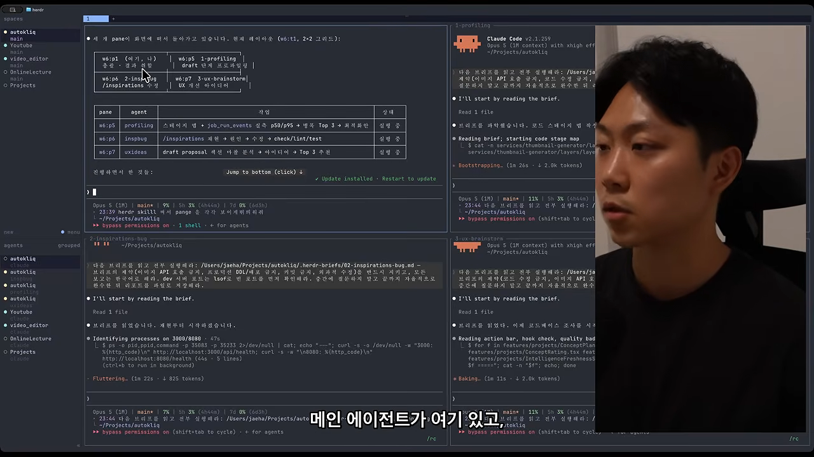
페인 사이의 조종은 herdr의 소켓 API로 해요. 사람은 원래 메인 오케스트레이터만 보면 돼요. 끝나면 이렇게 해 달라고 맡겨 둘 수도 있고, 더 손을 대고 싶을 때만 해당 페인으로 가서 진행 상황을 직접 보면 돼요.
보고는 계속 이어져요. 아래 화면 '진행하면서 한 것들'에는 오케스트레이터가 왜 그렇게 했는지가 적혀 있어요. 같은 작업을 두 번 돌리면 비용도 두 배라서 기존 백그라운드 에이전트를 멈췄고, 긴 프롬프트를 터미널에 붙여 넣다 생기는 이스케이프 사고를 피하려고 브리프를 파일로 넘겼대요. 작업 페인은 --no-focus로 띄워 발표자의 작업 흐름도 끊지 않았어요.
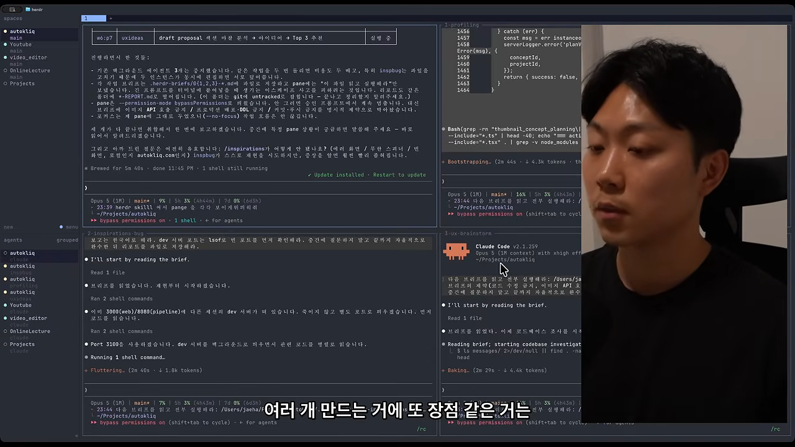
사람의 역할은 검증이에요
페인을 여러 개 띄우는 게 특히 쓸모 있는 건 최적화처럼 여러 기법을 시도해야 하는 일이에요. 런타임을 10% 줄이는 방법이 네 가지쯤 있다면, 보통은 서브에이전트 네 개를 백그라운드로 돌리겠죠. 이걸 페인 네 개로 띄워 놓고 보면 최적화가 실제로 잘 되는지 확인할 수 있어요. 돌아온 결과가 믿을 만하지 않은 경우가 많거든요.
사람의 역할은 검증의 역할로 저는 거의 다 넘어갔다고 생각하거든요.
— 영상 29:02
모든 걸 페인으로 보지는 않아요. 리뷰 같은 건 그냥 백그라운드로 알아서 하게 둬요. 발표자는 회사에서 마이그레이션 프로젝트를 하면서 서브에이전트를 20~30개씩 돌려요. 30개 페인을 다 보기는 어려우니 열 개 정도만 띄워 하나씩 봐요. 가설이 틀렸으면 왜 틀렸는지, 맞았으면 어떻게 고칠지를 정하고, 그 고치는 작업을 다시 병렬로 돌려요.
큰 그림은 메인 오케스트레이터에서 봐요. "A, B, C는 잘 되는데 나머지 일곱 개는 이런 이유로 실패한다"는 보고가 오면, 그중 오늘 당장 고칠 것만 골라 해당 페인에 가서 그 에이전트와 직접 대화해요. 일이 끝나면 오케스트레이터에 상태가 다시 모여요. 오케스트레이터는 그날 일을 다 알고 있어서 마지막에 리포트를 만들 수 있어요. 팀원이 현재 상태를 물으면 그 리포트를 공유하거나, 오케스트레이터에게 그 사람에게 보내라고 시킬 수도 있어요. 발표자는 메인 오케스트레이터를 두고 일을 관리하는 법에 익숙해져야 한다고 말해요.
결과 취합과 PR, 그리고 하루의 리듬
결과를 모아 PR로
세 작업이 다 끝난 뒤 발표자는 오케스트레이터에게 정리를 부탁해요. 아래 화면 왼쪽 위가 그 답이에요. "pane 3개로 병렬 실행했고 전부 완료"라는 첫 문장 아래, Inspirations 로딩 버그는 수정 완료라고 적혀 있어요. 원인은 GenerateFromButton 컴포넌트 쪽 문제였대요. 세 페인 모두 끝을 알리는 === DONE === 줄이 보여요.
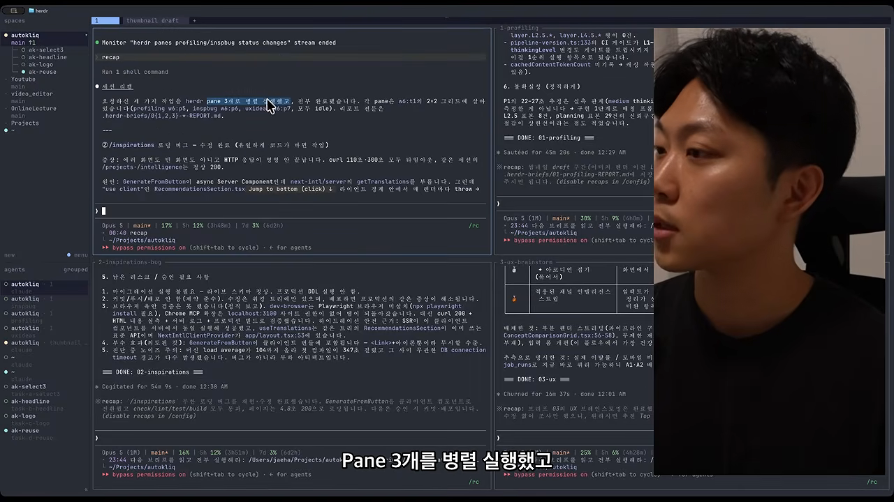
리캡 끝에는 '결정이 필요한 것'이 번호로 붙어요. 아래 화면에서 보면 이래요. ② 버그 수정을 커밋할까요(검증 게이트 4종 통과, 변경은 8줄과 테스트 1개), ① 최적화를 구현할까요, ③ 아이디어 중 착수할 게 있으면 골라 달라, 그리고 .herdr-briefs/는 git에 안 올라가 있으니 지울지 알려 달라는 내용이에요. 위에는 정리해 둔 것도 있어요. 이미지 API 호출 0건, 프로덕션 DDL·배포 0건, 커밋·푸시 0건이에요. 브리프의 제약을 지켰다는 확인이에요.
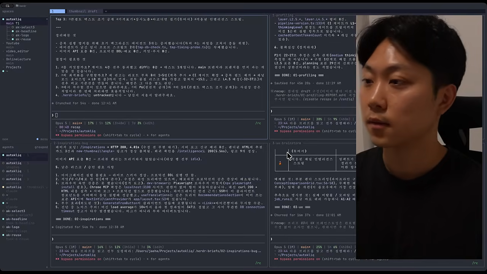
발표자는 "2번 PR을 만들되, 그 전에 Codex 리뷰를 한 번 돌려 줘"라고 답해요. PR 전에 Codex 리뷰를 붙이는 건 평소 습관이래요. 그러자 사이드바의 에이전트가 다시 노란색으로 바뀌어요.
같은 시간 옆에서는 다른 오케스트레이터가 썸네일 관련 작업 네 개(왼쪽 위 스페이스의 ak-select3, ak-headline, ak-logo, ak-reuse)를 돌리고 있었어요. 작은 버그 몇 개를 더 고치게 한 뒤 네 개 모두 게이트 검증을 통과했고, 발표자는 이걸 PR 하나로 합쳐 Codex 리뷰 후 만들라고 해요. 이날 AutoKliq에는 오케스트레이터 두 개가 서브에이전트를 3~4개씩 만들어, 모두 7개 정도의 에이전트가 붙었어요.
잘 때도 일하는 에이전트
발표자의 정리는 이래요. 터미널 멀티플렉서는 터미널을 닫아도 프로세스를 살려 두는 서버예요. 그래서 에이전트가 10분, 한 시간, 몇 시간씩 혼자 돌 수 있어요. 발표자의 하루는 아래처럼 흘러가요.
flowchart LR A["자기 전에 일을 걸어 둬요"] --> B["아침에 생성된 PR 리뷰"] B --> C["출근 전에 몇 개 더 걸어 둬요"] C --> D["지하철·운전 30~40분"] D --> E["회사 도착, PR·결과 확인"]
발표자는 에이전트가 계속 나를 위해 일하는 상태가 기본이 될 거라고 봐요. 그 바탕이 터미널 멀티플렉서라고요. herdr는 그중에서도 에이전트를 볼 줄 아는 tmux라서, 여러 에이전트를 운영하기 쉽게 만들어 줘요. 발표자는 메타에서 매일 쓰면서 아주 만족한다고 해요.
도구들도 에이전트 중심으로 다시 만들어지는 중이에요. herdr는 tmux의 에이전트 버전이고, Orca는 에이전트용 IDE(Integrated Development Environment), Aside는 에이전트용 브라우저예요. 발표자는 Aside로 AutoKliq 썸네일 생성을 자동화해 봤는데 잘 됐다며, 다음에 다뤄 보고 싶다고 해요.